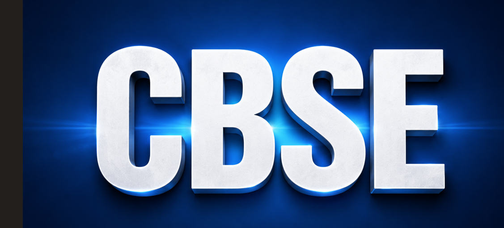

CBSE Advanced Level Mathematics and Science: Everything Students Need to Know
CBSE Advanced Level Mathematics and Science
CBSE Advanced Level Mathematics and Science: Everything Students Need to Know
Published by: Saraswat Academy

The Central Board of Secondary Education (CBSE) is planning to introduce Advanced Level courses in Mathematics and Science to provide students with an opportunity to study these subjects in greater depth. The initiative aims to help academically motivated students build stronger conceptual understanding, improve problem-solving skills, and prepare for higher education in science, technology, engineering, and mathematics (STEM) fields.
Unlike the regular curriculum, the Advanced Level programme focuses on analytical thinking, logical reasoning, practical applications, and real-world problem solving rather than rote memorisation. Students who enjoy Mathematics and Science and wish to explore these subjects beyond the standard syllabus may find this programme beneficial.
What is the CBSE Advanced Level Programme?
The Advanced Level programme is an optional learning pathway proposed by CBSE for students who want to study Mathematics and Science at a higher academic level. It is designed to challenge students through deeper concepts, application-based learning, and critical thinking while continuing within the CBSE education system.
Why is CBSE Introducing Advanced Level Courses?
Modern careers require students to think creatively, analyse problems, and apply knowledge effectively. To support these skills, CBSE plans to offer advanced courses that encourage conceptual learning instead of memorising facts. The initiative is also aligned with the vision of the National Education Policy (NEP) 2020, which promotes competency-based and flexible education.
Key Features
- Optional programme for interested students.
- Greater focus on conceptual understanding.
- Application-based learning and reasoning.
- Encourages scientific inquiry and mathematical thinking.
- Supports students interested in STEM careers.
- Helps build problem-solving and analytical skills.
Advanced Level vs Regular Curriculum
| Regular Curriculum | Advanced Level |
|---|---|
| Standard syllabus | Deeper understanding of concepts |
| Focus on textbook learning | Focus on application and reasoning |
| Suitable for all students | Designed for academically motivated learners |
| Moderate difficulty | Higher academic challenge |
| General problem-solving | Advanced analytical and logical thinking |
Who Should Choose Advanced Level?
The programme is suitable for students who enjoy solving challenging problems and have a strong interest in Mathematics or Science. It can be a good option for those planning careers in engineering, medicine, research, computer science, artificial intelligence, data science, or other STEM fields.
Benefits for Students
- Improves conceptual clarity.
- Develops logical and critical thinking.
- Builds confidence in solving complex problems.
- Strengthens preparation for higher studies.
- Encourages independent learning.
- Enhances scientific and mathematical skills.
Is the Advanced Level Compulsory?
No. The Advanced Level programme is expected to be optional. Students can continue with the regular CBSE curriculum if it better matches their interests, learning style, and future career plans.
Who Should Continue with the Regular Curriculum?
Students who plan to pursue careers in commerce, humanities, arts, law, or other non-STEM fields may find the standard curriculum more suitable. The regular CBSE syllabus continues to provide a strong academic foundation for a wide range of career opportunities.
Frequently Asked Questions (FAQs)
1. What is the CBSE Advanced Level Programme?
It is a proposed optional programme that allows students to study Mathematics and Science in greater depth with a stronger focus on conceptual understanding and problem-solving.
2. Is the programme compulsory?
No. Students are expected to have the choice between the regular and Advanced Level curriculum.
3. Which subjects are included?
The initial focus is on Mathematics and Science.
4. Who should opt for the Advanced Level?
Students who have a strong interest in STEM subjects and enjoy analytical learning may benefit the most.
5. Will it help in competitive examinations?
The stronger conceptual foundation and problem-solving approach can support preparation for various higher education entrance examinations.
Will Advanced Level Marks Be Added to the Main Result?
This is the most important point: do not assume that Advanced Level marks will be added to your total marks or percentage. CBSE's 2026–27 Class IX curriculum lists Mathematics and Mathematics at Advanced Level, and Science and Science at Advanced Level as separate study/assessment choices. However, the public curriculum material reviewed for this guide does not clearly state that Advanced Level marks will be added to the regular subject total, the overall percentage, or the Class X board result.
Therefore, students and parents should not rely on claims that Advanced Level marks definitely will—or definitely will not—be added to a final aggregate unless CBSE's applicable assessment circular or the school provides that rule in writing. Ask your school to confirm how the Advanced Level subject will appear in the Class IX report card, whether its marks count towards promotion or the aggregate, and what happens in Class X.
What students should understand
- Class IX is a school assessment year. Do not confuse the Class IX annual result with the Class X CBSE board result.
- Advanced Level is not automatically bonus marks. Choosing it does not itself establish that additional marks will be added to another subject or to an overall percentage.
- Do not assume a separate marksheet entry. Whether any separate grade, note, or record is issued must be confirmed from the official instructions applicable to your session.
- Get the rule before choosing. Ask the class teacher or examination in-charge to show the latest CBSE instructions and explain the school's assessment method.
Ask your school these three questions: (1) Will the Advanced subject be reported separately? (2) Will its marks count towards the Class IX aggregate or promotion? (3) What official rule applies to the subject in Class X and the Class X board examination?
Accuracy note: This guide reflects the CBSE curriculum information available for the 2026–27 session. Assessment and reporting details may be clarified through later CBSE circulars. Check the official CBSE Academic website for updates before making a final decision.
Official CBSE Resources
- CBSE Secondary Curriculum 2026–27 (Class IX and X) — the official curriculum index lists both regular and Advanced Level subjects.
- Class IX Mathematics Course Structure (2026–27).
- CBSE Academic Circulars — check for the latest assessment clarifications.
Conclusion
The proposed CBSE Advanced Level programme is an important step towards making school education more flexible and learner-centred. By offering students an opportunity to study Mathematics and Science in greater depth, the programme aims to develop critical thinking, analytical ability, and practical understanding. Students should choose the pathway that best matches their interests, academic strengths, and future career goals after discussing the options with their parents and teachers.
Download books for advance Mathematics and Science
MATHEMATICS AT ADVANCED LEVEL (OPTIONAL) GRADE 9 (2026-27)SCIENCE AT ADVANCED LEVEL (OPTIONAL) GRADE 9 (2026-27)
Last Updated: 27 July 2026
Popular Articles
Explore more useful articles, career guides and interesting facts to keep learning with Saraswat Academy.
NDA Exam 2026: Syllabus, Eligibility & Preparation
Explore NDA eligibility, exam pattern, syllabus and preparation tips for aspiring defence officers.
Read Article →National Education Policy (NEP) 2020
Understand the key features of NEP 2020 and its impact on India's education system.
Read Article →Discovery of Zero: History & Interesting Facts
Discover the fascinating history of zero and its importance in mathematics.
Read Article →Nobel Prize: History, Story & Interesting Facts
Learn about the Nobel Prize, its history and the achievements it celebrates.
Read Article →Examination System: History, Story & Interesting Facts
Learn about the examination system, its history and the achievements it celebrates.
Read Article →Best Career Options for Students in India after class 12: A Complete Guide
Explore the top career paths available to students after completing class 12.
Read Article →About the Author